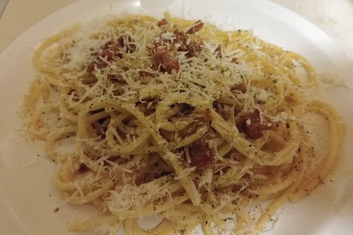

Italian Spaghetti alla Carbonara

Description
This dish was created in the Lazio region (the area around Rome) in the middle of the
20th century, after World War Two. We don't use cream, milk, garlic, onions or other
strange ingredients; we use only guanciale, eggs, pecorino cheese, and lots of black
pepper (carbonaro is the Italian for coal miner).
This isn't the Italian-American version, it's the real, creamy carbonara and it comes
right from Italy, where I live. Buon appetito.
Ingredients
- 2 teaspoons of olive oil
- 1 pound of diced guanciale
- 16 ounces of spaghetti
- 3 eggs
- Grated Pecorino Romano cheese, around 10 tablespoons
- Ground black pepper and salt to taste
Steps
- Heat olive oil in a large skillet over medium heat; add guanciale.
Cook, turning occasionally, until evenly browned and crispy, 5 to 10 minutes.
Remove from heat and drain on paper towels.
- Bring a large pot of salted water to a boil. Cook spaghetti in the boiling water,
stirring occasionally until tender yet firm to the bite, about 9 minutes. Drain
and return to the pot. Let cool, stirring occasionally, about 5 minutes.
- Whisk eggs, half of the Pecorino Romano cheese, and some black pepper in a bowl
until smooth and creamy. Pour egg mixture over pasta, stirring quickly, until
creamy and slightly cooled. Stir in guanciale. Top with remaining Pecorino Romano
cheese and more black pepper.
Cook's Notes
Guanciale, dry-cured pork jowl, is available from specialty markets. Substitute unsmoked
bacon or pancetta for the guanciale if desired.
Use Italian pasta for best results. Substitute bucatini for the spaghetti if preferred.
Substitute Parmesan cheese for the Pecorino Romano if desired.
Tip: ask somebody to hold the pot so you can stir pasta quickly while pouring the egg
mixture over it.
Original recipe